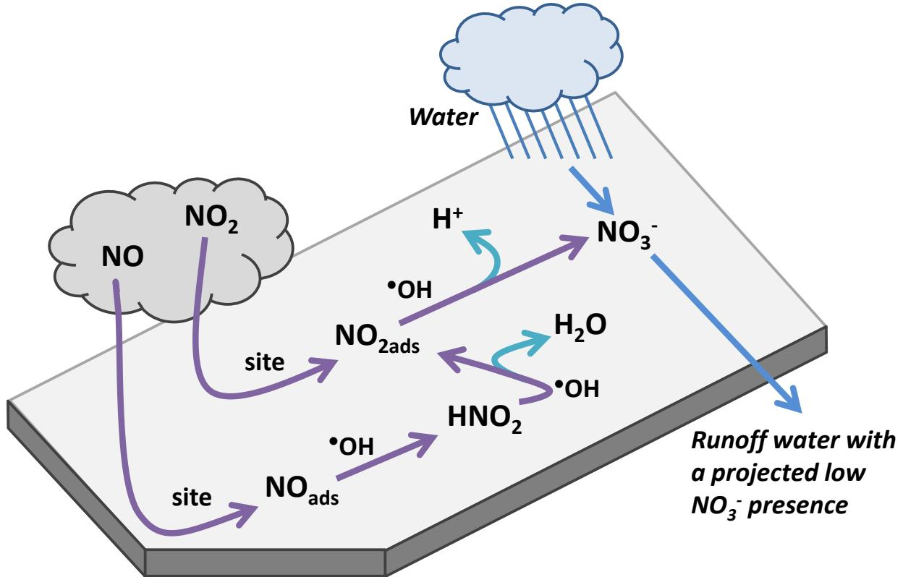
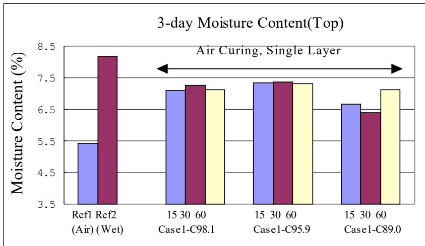

Curing Compounds
Curing compounds are a type of membrane curing method within Concrete Curing, functioning by forming a continuous liquid membrane on the concrete surface [1]. Liquids applied as a coating to newly placed concrete retard water loss and, in pigmented compounds, reflect heat; after application, the solvent or water evaporates and the wax or resin forms this membrane, which impedes the evaporation of mixing water from the freshly placed concrete [2]. As a result, this technique prevents excessive moisture loss and is widely used for curing concrete pavements due to its economic and application advantages [1]. The Efficiency Index serves as a specific child metric used by the Iowa Department of Transportation to evaluate moisture retention, representing the percentage retained relative to a control specimen. This measure addresses the high variability inherent in the standard ASTM C156 test method [1], which has prompted many DOTs to develop modified specifications instead [1].
Sources (21)
Sub-concepts (1)
Chemical Types and Classifications
- Wax emulsions — effective but affect bond of surface treatments
- Acrylic emulsions — good curing, permit better bond for subsequent treatments
- Chlorinated rubber-based — high effectiveness, but toxic and flammable solvents
- Hydrocarbon resins — excellent curing but become brittle under sunlight
- Polyvinyl acetate (PVA)-based — limited effectiveness, variable solids content
Non-film forming evaporation retardants are designed to pair with internal crystalline waterproofing agents and permeate the sample rather than remaining on the surface particles. [2]
| Type | Description | |------|-------------| | Type 1 | Clear | | Type 1-D | Clear/translucent with fugitive dye | | Type 2 | White pigmented | | Class A | No restrictions | | Class B | Resin-based compositions |
The use of Micro Air® admixture instead of Vinsol resin reduces the charge passed in rapid chloride permeability testing despite higher air contents, likely because smaller air bubbles limit ionic flow. [3]
Membrane-forming curing compounds prevent air pollution and other dirt particles from physically contacting the concrete surface, eliminating any photocatalytic effects. [4]

Photocatalytic oxidation of NO and N O_2 by concrete pavement containing T i O_2 [4]Key Performance Properties and Metrics
Water retention is measured by ASTM C156, though the method has high variability; Additionally, Type 2 compounds must have ≥60% reflectance, solvent-based compounds require a flash point of ≥50°F (10°C), and drying time must be ≤4 hours. While a double-layer application does not significantly improve properties when using a high-efficiency-index compound (e.g., 1645 with C95.9 or 2255 with C98.1) if applied uniformly, it clearly improves concrete properties when used with low-efficiency-index compounds (e.g., 1600 with C89.0) [1]. In field applications, the curing method significantly impacts durability; pavements cured with wet burlap and plastic sheeting for seven days demonstrated better cracking resistance to drying shrinkage compared to those treated primarily with curing compounds [5]. Regarding specific treatments, in field trials, soybean oil emulsion curing compound applied at 4.9 m²/L (200 ft²/gal) achieved an abrasion index of 82%, outperforming standard white pigment compounds which reached 86% [2], whereas non-film forming evaporation retardants applied at 16.3 m²/L (800 ft²/gal) produced the lowest unit weights and poorest abrasion resistance among surface-applied treatments [2]. Concrete specimens cured with membrane-forming compounds exhibit superior resistance to deicing salt scaling compared to those wet-cured in water, as the latter are more prone to absorbing aggressive salt solutions after subsequent air-drying periods [6].
 Effect of Curing Compound Application and Curing Condition on Sorptivity [1]
Effect of Curing Compound Application and Curing Condition on Sorptivity [1]
Curing conditions primarily affect near-surface concrete strength rather than internal concrete strength several inches from the surface, which in turn directly impacts rebound test values [7]; furthermore, the surface texture of cured concrete significantly influences rebound test results, as rough surfaces cause local crushing under the plunger that yields lower indicated strengths compared to true values [7]. Temperature gradients generated between the surface and bottom of concrete slabs during the curing process can significantly impact early cracking formation [8], and uneven curing that creates a moisture gradient through the slab depth can cause non-uniform concrete shrinkage and volume changes, leading to permanent curling and warping of the pavement [9]. The application of curing compounds is a critical factor in studies investigating the permanent curling and warping behavior of rigid pavements under environmental loading [9]. Extended and continuous wet curing may increase dry shrinkage by reducing concrete permeability, which leads to a higher degree of saturation due to smaller pores; this can cause higher warping deflection during severe drying periods, and when the curing compounds are removed, the rate of drying shrinkage may increase, potentially leading to early cracks [10]. Inadequate curing and protection against evaporation can lead to significant ‘craze cracking’ that reflects into sub-vertical drying shrinkage microcracks extending up to 51 mm (2 inches) deep, which subsequently facilitates extensive carbonation [6].
 Recreated from Cement Concrete & Aggregates Australia 2002 Figure 4. Typical volume behavior of concrete drying and wetting [10]
Recreated from Cement Concrete & Aggregates Australia 2002 Figure 4. Typical volume behavior of concrete drying and wetting [10]
The uncracked section of high-performance concrete exhibited less initial warping than control sections constructed with standard ODOT Class C concrete at the same time [8], and in-place maturity values can be used to estimate flexural strength, such as reaching a 550 psi flexural strength equivalent at approximately 2.5 days after placement [8]. A higher proportion of fine aggregate in the mix can lead to increased water demand, which subsequently results in increased shrinkage during curing [8]; similarly, the addition of 2% nano-clay materials by weight of cementitious materials alters the shrinkage behavior of self-flowing slip-form concrete, where Actigel and Concresol increase drying shrinkage while Metamax decreases it [5]. The curing type factor (C2) is assigned a value of 1.2 when concrete is cured using a curing compound, compared to 1.0 for moist curing, which directly influences temperature difference calculations in models like PMED used to evaluate curling and warping behavior [11]. Regarding scaling, the inclusion of silica fume and metakaolin generally does not reduce the severity of moderate surface scaling in concrete mixtures, whereas the addition of fly ash or slag cement has been shown to reduce this damage [12]; overall, scaling resistance is predominantly controlled by the type of supplementary cementitious materials (SCMs) used, while mixing and curing temperatures do not appear to significantly affect this performance metric [12].
 Drying shrinkage and mass loss of mixes without nano-clay [5]
Drying shrinkage and mass loss of mixes without nano-clay [5]
Type 2 liquid membrane-forming curing compounds must have a reflectance of at least 60% to reduce radiant heat absorption and early-age thermal stresses. [1]
Curing compounds are evaluated for performance using the Efficiency Index, which quantifies their ability to retain moisture within the concrete matrix during the critical early hydration period [1]. This metric is essential because proper curing facilitates cement hydration by retaining adequate moisture and temperature, thereby ensuring desirable strength and durability [1]. Research indicates that applying a sufficient amount of a high-efficiency-index curing compound significantly increases moisture content and reduces sorptivity in the near-surface area [1].
Iowa DOT specifications require a curing material efficiency index of at least 95.0%, unless the material demonstrates moisture loss of less than 1.0% of the remaining water in the specimen. [1]

Moisture Content of Air Cured Specimens at Three Days [1]The ASTM C156 test method for water retention exhibits high variability, with a single-operator standard deviation of 0.13 kg/m² [1] and a multi-laboratory standard deviation of 0.30 kg/m² [1].
Many DOTs have developed modified specifications [1].
Application Techniques and Equipment
White pigmented curing compounds can be applied using specialized equipment such as the Guntert and Zimmerman TC-850, which simultaneously performs longitudinal tining and sprays the compound on exposed slab portions [13]. For drag and tined textures, curing should begin immediately following the texture operation by spraying two coats of membrane curing compound at an individual application rate not to exceed 180 sf/gal [14]; specifically, the first coat must be applied within 10 minutes after completing texturing operations, with a second coat applied within 30 minutes if applicable [14]. White-pigmented curing compounds are also applied immediately after finishing and prior to covering the patch with insulation board for continued curing [7]. General application timing requires applying after bleed water sheen disappears but before surface dries [1], and typical rates are 2.5-5.0 m²/L, though Iowa DOT specifies 3.3 m²/L [1]. Achieving uniformity is critical and is affected by nozzle type, spacing, boom height, cart speed, and wind shield [1]. To prevent wavy surface textures, the forward speed of curing and texturing equipment must be carefully controlled, although variations in travel rate do not alter the depth of the tined grooves [15]. For transverse tining operations, the curing compound application broom must be positioned to ensure consecutive passes run parallel to each other while minimizing overlap areas [15]. If concrete exhibits visual signs of premature curing before texturing, the application equipment should be repositioned closer to the slipform paver to maintain effectiveness [15]. Additionally, a specialized “knife” attachment can be mounted on the bottom of a slipform paver pan to assist in concrete operations, allowing for quick removal when the equipment is used on other projects [16].
To prevent saws from sliding on heavily cured pavement surfaces during jointing operations, multiple coats of curing compound can be applied in stages to address steep profile grades or super elevated cross-slopes [17]. If diamond grinding newly constructed concrete pavement, curing compound must be re-applied if the operation occurs within three days of placement to maintain surface integrity [14]. Curing compounds can also function as bond breakers when applied to existing asphalt surfaces prior to placing a new concrete overlay [18], and white-pigmented liquid curing compounds are used as bond breakers on vertical surfaces such as existing curbs immediately prior to paving [18]. Protective coatings evaluated as dual-purpose curing compounds must be applied at the proper time for curing according to Test Method C 156, and penetration-type coatings may require surface abrasion by wire brushing to break residual films before traffic wear evaluation [3].
Liquid membrane-forming compounds must be applied after surface water sheen disappears but before the material is absorbed into the concrete, typically immediately following final finishing. [1]
Environmental Application Factors
The timing and method of applying curing compounds must be adjusted based on environmental conditions and concrete bleeding behavior [1]. In hot weather, early application provides high moisture content and low sorptivity, though temperatures can reach 120°F–130°F if heat is retained by underlying layers such as an HMA stress relief layer, raising concerns about strength gain and the bond between slabs [19]. Conversely, in mild weather, optimal properties are achieved when applied 30 minutes after casting due to bleeding water effects [1]. Application timing is most critical when ambient conditions are dry and windy, with a general guideline to apply as quickly as reasonable [8]. If the evaporation rate during paving operations does not exceed 0.1 lb/sf/hr, only one coat of membrane curing compound is allowed, provided it is applied at a rate not exceeding 180 sf/gal [14]. In wet weather conditions following aggregate exposure, curing compounds should be applied as soon as practicable after rain stops, or alternatively, a wet mat curing process may be used to maintain constant moisture [20]; however, if a rainstorm saturates the slab before it is covered, the surface can be longitudinally tined and resprayed with curing compound provided the concrete has not yet set, otherwise the surface sustains visible damage [13].
In cool-weather paving, temporarily covering a concrete overlay with plastic after curing compound application helps maintain internal temperatures, allowing the concrete to set properly from the bottom up and ensuring timely sawing windows [17].
Applying curing compound while bleeding continues can stop evaporation prematurely, leading to trapped moisture and potential surface defects. [1]
Advanced Curing Materials and Internal Agents
In high-performance concrete pavements, high solids curing compounds are utilized, often combined with other specialized materials such as polyolefin fibers and hard igneous coarse aggregate to enhance durability [8]. As an alternative to membrane-forming sealants, which are prone to dramatic increases in drying shrinkage rates upon wear-off, Poly(alpha-methylstyrene) curing compounds can reduce shrinkage more effectively than conventional wax- or resin-based curing compounds [10].
Thin Overlay Application Timing
In the case of thinner concrete overlay sections, curing compound application must occur before any surface evaporation begins to ensure adequate moisture retention during the critical early hydration phase [17]. For exposed aggregate concrete, a curing compound must be applied within one hour after brushing, with a minimum spread rate of 200 grams per square meter [20].
Pervious concrete requires specialized attention due to its structure; for pervious concrete, liquid membrane-forming compounds prevent surface moisture loss but do not prevent evaporation from within the highly porous material [2]. Consequently, for pervious concrete pavement (PCPC), the large exposed surface area requires immediate application of curing compound followed by clear plastic sheeting to prevent rapid moisture loss [21]. However, soybean oil has been successfully used to cure pervious concrete, reduce moisture loss, and protect surfaces against deicer salt scaling [4]. Furthermore, soybean oil curing compounds do not reduce the self-cleaning or air cleaning properties of photocatalytic concrete, unlike membrane-forming compounds which prevent pollutant particles from contacting the surface [4].
 Self-cleaning ability as measured by rodamine red degredation [4]
Self-cleaning ability as measured by rodamine red degredation [4]
Monitoring and Testing Technologies
Because excessive application of curing compound can interfere with texture verification testing, the surface may require brushing prior to measurement [14].
Regulatory And Safety Standards
The drying time for liquid membrane-forming compounds must not exceed four hours, and their volatile portion must have a flash point of at least 50°F (10°C). [1]
California Department of Transportation requires curing compound resin to consist of 100% polyalpha-methylrene to ensure superior water retention properties. [1]
See also
References
- K. Wang, J. K. Cable, and G. Zhi, "Improved Pavement Curing Materials and Techniques: Part 1 (Phases I and II)," Center for Transportation Research and Education (CTRE), Iowa State University, Ames, IA, Rep. TR-451, 2002. [Online]. Available: https://www.cptechcenter.org/wp-content/uploads/2018/03/curing.pdf
- V. R. Schaefer and J. T. Kevern, "An Integrated Study of Pervious Concrete Mixture Design for Wearing Course Applications," National Concrete Pavement Technology Center, Ames, IA, 2011. [Online]. Available: https://www.intrans.iastate.edu/wp-content/uploads/2018/03/pervious_overlay_report_w_cvr.pdf
- R. D. Hooton and D. Vassilev, "Deicer Scaling Resistance of Concrete Mixtures Containing Slag Cement, Phase 2," National Concrete Pavement Technology Center, Ames, IA, Rep. TPF-5(100), 2012. [Online]. Available: https://www.intrans.iastate.edu/research/completed/deicer-scaling-resistance-of-concrete-pavements-bridge-decks-and-other-structures-containing-slag-cement-phase-2-evaluation-of-different-laboratory-scaling-test-methods/
- T. Cackler, J. Alleman, J. Kevern, and J. Sikkema, "Technology Demonstrations Project: Environmental Impact Benefits with "TX Active" Concrete Pavement (Missouri DOT Two-Lift Demonstration)," National Concrete Pavement Technology Center, Ames, IA, 2012. [Online]. Available: https://www.cptechcenter.org/research/completed/technology-demonstrations-project-environmental-impact-benefits-with-tx-active-concrete-pavement-in-missouri-dot-two-lift-highway-construction-demonstration/
- K. Wang, S. P. Shah, J. Grove, P. Taylor, P. Wiegand, B. Steffes, G. Lomboy, Z. Quanji, L. Gang, and N. Tregger, "Self-Consolidating Concrete—Applications for Slip-Form Paving: Phase II," National Concrete Pavement Technology Center, Ames, IA, Rep. TPF-5(098), 2011. [Online]. Available: https://www.intrans.iastate.edu/wp-content/uploads/2018/03/SCC_Phase_2_final_report-edited_wcover.pdf
- P. Taylor, L. Sutter, and J. Weiss, "Investigation of Deterioration of Joints in Concrete Pavements," National Concrete Pavement Technology Center, Ames, IA, Rep. TPF-5(224), 2012. [Online]. Available: https://www.intrans.iastate.edu/wp-content/uploads/2018/03/joint_deterioration_penetrating_sealers_field_study_w_cvr.pdf
- J. K. Cable, K. Wang, S. J. Somsky, and J. Williams, "Portland Cement Concrete Patching Techniques vs. Performance and Traffic Delay," Center for Portland Cement Concrete Pavement Technology, Iowa State University, Ames, IA, 2004. [Online]. Available: https://www.intrans.iastate.edu/wp-content/uploads/2018/08/patching_report.pdf
- J. Grove, G. Fick, T. Rupnow, and F. Bektas, "Material and Construction Optimization for Prevention of Premature Pavement Distress in PCC Pavements," National Concrete Pavement Technology Center, Ames, IA, Rep. TPF-5(066), 2008. [Online]. Available: https://www.intrans.iastate.edu/wp-content/uploads/2018/03/mco-final.pdf
- H. Ceylan, S. Kim, D. J. Turner, R. O. Rasmussen, G. K. Chang, J. Grove, and K. Gopalakrishnan, "Impact of Curling, Warping, and Other Early-Age Behavior on Concrete Pavement Smoothness: EFD Study (Phase II)," Center for Transportation Research and Education, Ames, IA, 2007. [Online]. Available: https://www.intrans.iastate.edu/wp-content/uploads/2018/03/curling_warping-2.pdf
- H. Ceylan, S. Yang, K. Gopalakrishnan, S. Kim, P. Taylor, and A. Alhasan, "Impact of Curling and Warping on Concrete Pavement," Institute for Transportation, Ames, IA, Rep. TR-668, 2016. [Online]. Available: https://www.intrans.iastate.edu/wp-content/uploads/2018/03/curling_and_warping_impact_on_concrete_pvmt_w_cvr.pdf
- K. Tian, D. King, B. Yang, S. Kim, A. Alhasan, and H. Ceylan, "Impact of Curling and Warping on Concrete Pavement: Phase II," Program for Sustainable Pavement Engineering and Research (PROSPER), Iowa State University, Ames, IA, Rep. TR-749, 2023. [Online]. Available: https://intrans.iastate.edu/app/uploads/2023/06/Impact_of_Curling_and_Warping_Phase_II_w_cvr.pdf
- P. Taylor, P. Tikalsky, K. Wang, G. Fick, and X. Wang, "Development of Performance Properties of Ternary Mixtures: Field Demonstrations and Project Summary," National Concrete Pavement Technology Center, Ames, IA, Rep. TPF-5(117), 2012. [Online]. Available: https://www.intrans.iastate.edu/wp-content/uploads/2018/03/ternary_final_w_cvr.pdf
- J. K. Cable, M. L. Anthony, F. S. Fanous, and B. M. Phares, "Evaluation of Composite Pavement Unbonded Overlays: Phases I and II," Center for Portland Cement Concrete Pavement Technology, Iowa State University, Ames, IA, Rep. TR-478, 2003. [Online]. Available: https://www.intrans.iastate.edu/research/completed/evaluation-of-composite-pavement-unbonded-overlays-phase-iii-tr-478-hr-1093-proj-2/
- R. O. Rasmussen, P. D. Weigand, and D. S. Harrington, "Concrete Pavement Surface Characteristics: Key Findings and Guide Specifications," National Concrete Pavement Technology Center, Ames, IA, Rep. TPF-5(139), 2012. [Online]. Available: https://www.intrans.iastate.edu/wp-content/uploads/2018/03/surface-char-part2.pdf
- P. Wiegand, J. K. Cable, S. Reinert, and T. Tabbert, "Iowa Data Collection and Analysis for the 2005-2006 National Surface Characteristics Field Experiment Plan," CTRE, Iowa State University, Ames, IA, Rep. TR-537, 2005. [Online]. Available: https://www.intrans.iastate.edu/wp-content/uploads/2018/03/surface_char.pdf
- P. D. Wiegand, J. K. Cable, T. Cackler, and D. Harrington, "Improving Concrete Overlay Construction," National Concrete Pavement Technology Center, Ames, IA, Rep. TR-600, 2010. [Online]. Available: http://publications.iowa.gov/20076/1/IADOT_tr_600_Improving_Concrete_Overlay_Construction_2010.pdf
- G. Fick and D. Harrington, "Concrete Overlay Field Application Program, Final Report: Volume I," National Concrete Pavement Technology Center, Ames, IA, 2012. [Online]. Available: https://apps.itd.idaho.gov/apps/manuals/Materials/Materials%20References/OverlayFieldAppFinalReport.pdf
- J. K. Cable and J. Williams, "Evaluation of Unbonded Ultrathin Whitetopping of Brick Streets," CTRE, Iowa State University, Ames, IA, Rep. TR-466, 2006. [Online]. Available: https://www.intrans.iastate.edu/wp-content/uploads/2018/03/whitetopping.pdf
- J. K. Cable, J. L. Morud, and T. R. Tabbert, "Evaluation of Composite Pavement Unbonded Overlays: Phase III," CTRE, Iowa State University, Ames, IA, Rep. TR-478, 2006. [Online]. Available: https://rosap.ntl.bts.gov/view/dot/24065
- E. T. Cackler, T. Ferragut, and D. S. Harrington, "Evaluation of U.S. and European Concrete Pavement Noise Reduction Methods," National Concrete Pavement Technology Center, Iowa State University, Ames, IA, Rep. FHWA Project 15 (DTFH61-01-X-00042), 2006. [Online]. Available: https://www.cptechcenter.org/wp-content/uploads/2018/03/surface_characteristics_i.pdf
- V. R. Schaefer, K. Wang, M. T. Suleiman, and J. T. Kevern, "Mix Design Development for Pervious Concrete in Cold Weather Climates," CTRE, Iowa State University, Ames, IA, 2006. [Online]. Available: https://www.perviouspavement.org/downloads/Iowa.pdf
Feedback on this page